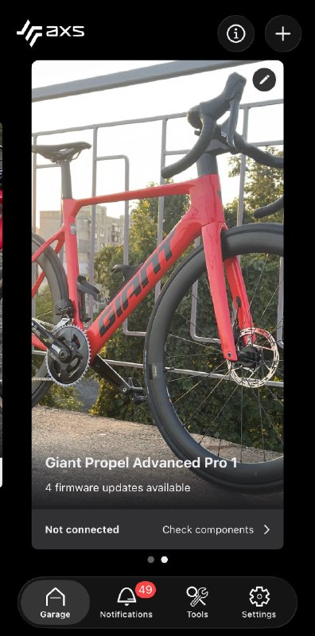
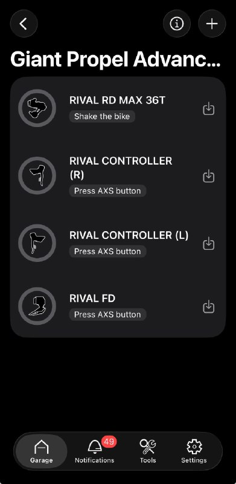
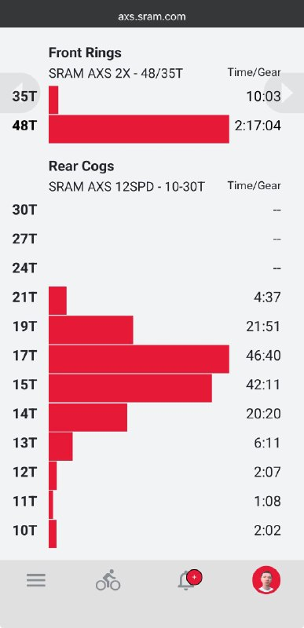

Привіт. Сьогодні поговоримо про електронну трансмісію.
Помітив, що не всі використовують можливості своїх eTap/Di2 на повну. Розкрию більше.
Спочатку треба визначити з опису вашого велосипеда, яка у вас система — SRAM eTap чи Shimano Di2.
Далі — під'єднати трансмісію до велокомп'ютера (або годинника), щоб бачити залишок заряду батарей перекидок і поточну передачу.
І нарешті — поставити додаток на телефон, щоб оновлювати програмне забезпечення трансмісії. Так, на трансмісію теж треба ставити апдейти час від часу, щоб вона краще працювала, такий цей світ.
Нижче — інструкції та деталі окремо для SRAM і Shimano. Ці трансмісії між собою несумісні, мають різні додатки та трохи різні функції. Якщо цікаво, є порівняння історії цих брендів у відео.
SRAM eTap AXS
Групсет існує у варіантах Apex, Rival, Force, RED. Всі системи мають спільну електроніку, яка працює за однаковим принципом. У наших широтах найбільш поширена система — Rival, бо це хороший баланс між вартістю та надійністю.
У кожному шифтері — батарейка CR2032. Вона не заряджається, лише замінюється. SRAM обіцяє близько 2 років за нормального використання (з розрахунку 15 годин їзди на тиждень).
Кожна перекидка має власний знімний акумулятор. Заряджається окремим зарядним пристроєм, повний заряд — приблизно година, вистачає на ~60 годин їзди. Акумулятори передньої та задньої перекидки однакові. Якщо задня сяде в нуль посеред маршруту, можна переставити акумулятор із передньої і доїхати на одній зірці спереду.
Система засинає приблизно через 5 хвилин без руху й прокидається, коли ви рухаєте велосипед, прокручуєте шатуни або натискаєте пелюстку.
1. Підключення до велокомп'ютера
SRAM eTap передає дані по ANT+ так само, як будь-який інший датчик, як-от пульсометр.
Для Garmin:
- Розбудити задню перекидку, прокрутивши педалі назад.
- Menu → Sensors → Add sensor → Shifting.
- Вибрати датчик із серійним номером перекидки та «Add».
Далі обов'язково налаштуйте кількість зубців, інакше Garmin показуватиме дефолтні цифри замість ваших. Можна скористатись детальною інструкцією з відео.
Після цього на екран Garmin Edge можна виводити поля із зарядом обох шифтерів і обох перекидок, а також поточну передачу спереду та ззаду. Garmin сам попередить про низький заряд батареї.
У Force та RED є додаткові кнопки (Bonus Buttons) на внутрішньому боці худів (hoods) — ними можна перемикати екрани велокомпа. У Rival їх немає. Для керування екранами з цих кнопок потрібен Edge 540/840/1040 або новіший.
2. Додаток
Усі знімки нижче — з мого велосипеда, у мене SRAM Rival AXS. Для смартфона є SRAM AXS Mobile App, доступний в Apple App Store та Google Play.
Треба зареєструватися, додати велосипед і всі чотири компоненти — лівий/правий шифтер, передня/задня перекидка (інструкція).


Тепер можна оновлювати ПЗ перекидок та налаштовувати кнопки. Наприклад, зробити так, щоб права кнопка додавала передачу, ліва — скидала; при цьому система сама підбирає зірочки спереду та ззаду, щоб уникнути значного перекосу ланцюга.
А веб-портал axs.sram.com (AXS Web) показує, скільки часу за тренування ви провели на тій чи іншій зірці. Щоб дані туди потрапляли, треба зв'язати акаунт AXS з Garmin Connect або Strava.

Shimano Di2
Є у версіях 105 (R7100), Ultegra (R8100) і Dura-Ace (R9200). У нас поширений групсет серії 105.
Система теж складається з чотирьох компонентів: лівий і правий шифтер (дуал) на кермі, передня та задня перекидки. Але живлення влаштоване інакше, ніж у SRAM.
У кожному шифтері — батарейка CR1632 (а не CR2032, як у SRAM). В Ultegra та Dura-Ace одна на шифтер, у 105 та GRX — дві. Не заряджається, лише замінюється: приблизно раз на 2 роки для Ultegra/Dura-Ace і раз на 3–4 роки для 105.
Обидві перекидки живляться від однієї спільної акумуляторної батареї, яка стоїть у рамі, зазвичай у підсідельній трубі. Заряджається кабелем, який підключається до задньої перекидки. Вистачає приблизно на 1000–1500 км. Коли заряд закінчується, спочатку перестає працювати передня перекидка, а задня тримається ще кількасот перемикань. Передня перекидка споживає приблизно вчетверо більше енергії за задню — це головний фактор, що з'їдає заряд.
Система засинає через 30 хвилин без активності. Перевірити заряд основної батареї можна натисканням кнопки на задній перекидці.
1. Підключення до велокомп'ютера
Shimano Di2 так само передає дані по ANT+.
Для Garmin: Menu → Sensors → Add sensor → Shimano Di2 → перемкнути будь-яку передачу. Або скористатись відео.
Після цього на екран Garmin Edge можна виводити поля із зарядом системи (одне значення на обидві перекидки), зарядом обох шифтерів і поточною передачею спереду та ззаду. Кількість зубців так само варто налаштувати вручну, інакше Garmin показуватиме дефолтні значення. Garmin автоматично попередить вас про низький заряд батареї. Повністю огляд функцій є на сайті Garmin.
В Ultegra та Dura-Ace є додаткові кнопки на худах — ними можна керувати екранами велокомпа або призначити їх на додаткове перемикання. У 105 їх немає.
2. Додаток
Для смартфона є E-Tube Project Cyclist. Станом на момент написання він недоступний для iPhone в українському App Store — є лише в Google Play для Android. Щоб поставити на iPhone, треба міняти регіон App Store.
Хороший огляд можливостей додатка є на сайті VeloGO. Я краще не розповім, бо ніколи не користувався електронною трансмісією Shimano Di2 — у мене на велосипеді SRAM.
По суті, в E-TUBE PROJECT Cyclist можна робити те саме, що й у SRAM AXS: оновлювати ПЗ компонентів, програмувати кнопки, налаштовувати задню перекидку. Аналог послідовного перемикання SRAM тут називається Synchronized Shift, а Semi-Synchronized Shift — це коли задня перекидка автоматично підлаштовується під перемикання передньої.